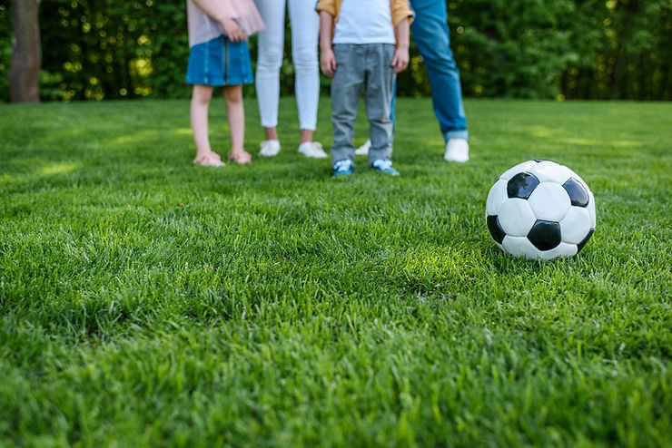
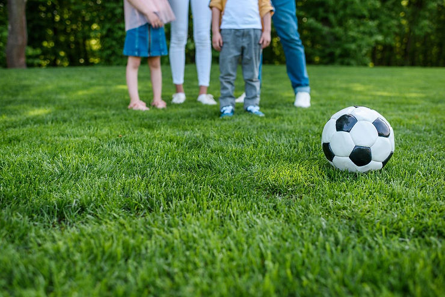
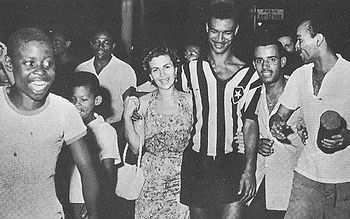
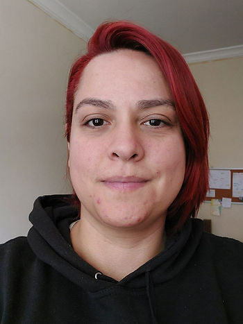

Texto de Marina de Mattos Dantas

Ao chegarmos na última semana do ano, muito já foi dito sobre a Copa do Mundo FIFA de Futebol Masculino (aquela jogada por homens). As concepções sobre saúde mental se mostraram diversas durante os dias da competição, de forma mais ou menos articulada com uma saúde integral, dependendo da perspectiva de quem abordava o assunto, e, por vezes, beiraram o pedido de uma “intervenção psiquiátrica” no futebol com o clamor de um (inatingível) controle de performances e resultados. Entendemos, claro, que esse clamor emerge na melhor das boas intenções, mas há que se pontuar os riscos desse discurso, velho conhecido de profissionais da saúde mental.
Como também lembrado em outro texto prestes a sair por esses tempos (1), as famílias dos jogadores foram coadjuvantes notáveis durante a Copa do Catar, sempre presente nos intervalos da cobertura midiática, também estrategicamente presentes nos jantares pós-jogos da Seleção e em momentos de treinamento no início da competição.
Se nesse texto anterior focamos nas pedagogias da paternidade, neste continuo a falar sobre as famílias, com algum foco nas mulheres casadas com jogadores de futebol profissional.

Dos jogadores de outras épocas, encontramos em jornais, biografias e vídeos, fragmentos de relações que circularam pelas crônicas e pelo jornalismo esportivo. O documentário “Histórias do Esporte: Didi – lendas de uma paixão” (2), apresenta o casal Didi e Guiomar. Ele é lembrado como jogador do Fluminense, do Botafogo, do Real Madrid e da Seleção Brasileira (1952 – 1962). Ela é lembrada como cantora, no momento no qual conheceu o seu então futuro marido, e, no decorrer do filme, é circunscrita pelas funções de esposa e mãe. O documentário coloca Guiomar como “perseguidora” do marido namorador e ainda ressalta que a mulher morreu vinte dias depois de Didi, em 12 de maio 2001, dando a entender que a morte ocorrera por saudade ou “para acompanhar o marido”. Situação semelhante à de Elza Soares, falecida no mesmo dia que Garrincha, 40 anos depois.
O casamento entre Garrincha, famoso por jogar no Botafogo e na Seleção (1955 – 1966), e Elza Soares, cantora, é um dos casos de relacionamento mais famosos do meio futebolístico e muito marcado pelo sofrimento. Detalhes do relacionamento entre os dois aparecem na biografia do jogador “Estrela Solitária: um brasileiro chamado Garrincha” (3). Muitos anos depois, a cantora também teve uma biografia lançada, na qual aparece uma outra versão da história do casal: “Elza Soares – Cantando para não Enlouquecer” (4).
Anos mais tarde, uma reportagem da Revista Placar (5) trazia um retrospecto do relacionamento entre Roberto Dinamite, famoso jogador (e ex-dirigente) do Vasco da Gama e também da Seleção Brasileira (1975 – 1984), e Jurema, sua esposa. Na ocasião da morte de Jurema, Dinamite declarou ter sofrido preconceito dos colegas de profissão nos anos 1970 por estar casado com uma mulher seis anos mais velha e que já era mãe. A mesma reportagem mostra Jurema como esposa e mãe cuidadosa.
Esses três casos selecionados aleatoriamente, sobre experiências vividas por jogadores entre os anos 1950 e 1970, apenas ilustram representações possíveis sobre essas mulheres. Em todo caso, interessam nessas histórias, como em outras, o que delas permanece no tempo presente, apontando não somente representações sobre essas mulheres, mas também modos de produção de subjetividade, constituídos ao longo do tempo, que indicam certa diversidade de modos de ser e de viver, dentro desse grupo categorizado como “esposas”. Indicam, por exemplo, que não é em todas as situações que a figura da esposa, dependendo de quem for essa mulher, ocupa um lugar secundário na exposição midiática, como apontam os casos das cantoras Guiomar, e, principalmente, o de Elza Soares.
Em Copas passadas, a presença familiar já fora mantida distante dos gramados, considerada desnecessária e mesmo empecilho ao desempenho. Nesta Copa, a presença das esposas foi mais sutil, talvez aparecendo mais pela companheira de Tite, Rosmari Bachi, junto ao restante de sua família. Em outros momentos, Rose já fora apresentada como “a mulher por trás de Tite”.
Em suma, há algo que se modifica, por meio do tempo, na forma como essas mulheres são apresentadas socialmente, mas que continua situado principalmente pela conjugalidade (e, frequentemente, pela maternidade). Esses dois elementos aparecem como distintivos das esposas em relação às “maria-chuteiras”, esse estereótipo marcado pelo interesse financeiro das mulheres em relação aos homens jogadores. Contudo, tal distinção é colocada em xeque em caso de divórcio, voltando a assombrar essas mulheres quando conflitos e disputas por direitos delas e dos filhos entram em jogo.
A rede de apoio composta pelas mulheres casadas com jogadores (DANTAS, 2022) junto às mães (MENEZES, 2021), avós e outras, que trabalham em certo campo de invisibilidade, sustentando a possibilidade de dedicação dos jogadores, quase que com exclusividade, às suas carreiras, é ainda pouco discutida, então torna-se corriqueiro pensar que a família vive “nas costas” do jogador ou em função de sua benevolência.
No Brasil, a centralidade da família nas políticas de seguridade social está presente desde os seus primórdios, por questões diversas que envolvem, inclusive, o entendimento dessa família como a continuidade do Estado no controle dos indivíduos. Para Pereira (2006, p.29) “os governos brasileiros sempre se beneficiaram da participação autonomizada e voluntarista da família na provisão do bem-estar de seus membros”. Atualmente, a discussão sobre o peso que se recai sobre as mulheres, historicamente protagonistas nesses cuidados com a família, ainda se faz necessária nas políticas públicas.
No futebol, ao mesmo tempo que frequentemente julgadas pela opinião pública como interesseiras e responsabilizadas pelos cuidados familiares, às mulheres continua sendo delegado esse papel importante de sustentadoras do “psicológico” (do marido, dos filhos). Ou seja, essa “entidade” psicológica, frequentemente mistificada e, com frequência, pouco discutida abertamente e com profundidade na categoria Futebol Masculino, é naturalizada como instância de responsabilidade dos familiares. Não raramente, tal responsabilidade recai quase integralmente sobre as esposas (também mães, avós…).
Em 2022, a transmissão televisiva ressaltou durante vários momentos durante a copa o quanto a presença da família contribui para o bem-estar e a motivação do jogador e do time (podendo até mesmo substituir os profissionais de psicologia, que, segundo Tite, embora não rechaçados, não teriam tempo hábil para construir vínculos com os jogadores durante a competição).
Ainda que a presença familiar possa ser agradável para os jogadores, considerá-la como fonte natural de bem-estar e de “preparação mental” não declarada nos traz algumas questões, entre outras, para pensarmos as concepções sobre família e como anda se constituindo o cuidado na categoria Profissional do Futebol Masculino da Seleção Brasileira.
Citações
(1) BANDEIRA, Gustavo Andrada; DANTAS, Marina de Mattos. Família, paternidade e “o psicológico” na Copa do Mundo de 2022. In: Ludopédio. São Paulo, 2023 (no prelo).
(2) ESPN. Histórias do Esporte: Didi – lendas de uma paixão. ESPN Vídeos, 31 maio 2014.
(3) CASTRO, Ruy. Estrela solitária: um brasileiro chamado Garrincha. São Paulo: Companhia das Letras, 1995.
(4) LOUZEIRO, José. Elza Soares: Cantando para Não Enlouquecer. Rio de Janeiro: Editora Planeta, 2010.
(5) BENEVIDES, Roberto; ARAÚJO, Maria Helena; LOPES, Tim. O adeus de Jurema Dinamite. In: Revista Placar, n. 748, pp.28-31, 21 set. 1984.
Dicas de leitura sobre algumas questões tocadas no texto:
BANDEIRA, Gustavo Andrada; DANTAS, Marina de Mattos. Família, paternidade e “o psicológico” na Copa do Mundo de 2022. In: Ludopédio. São Paulo, 2023 (no prelo).
DANTAS, Marina de Mattos. Mulheres casadas com jogadores de futebol profissional: relações entre conjugalidade, trabalho, lazer e torcer. In: Recorde, Rio de Janeiro, v. 15, n. 2, p. 1-33, jul./dez. 2022.
LEWCZYNSKI, Camile Pasqualotto. A percepção das esposas sobre a profissão de jogador de futebol e o seu papel na carreira de seus maridos jogadores profissionais de futebol. 2010. Monografia (Aperfeiçoamento/Especialização em Psicologia do Esporte e do Exercício) – Universidade Feevale, Novo Hamburgo/RS, 2010.
MENEZES, Isabella Trindade. O jogo das mulheres: Futebol, relações étnico-raciais e projetos familiares de formação de jogadores em clubes no Rio de Janeiro. 2021. Tese (Doutorado em História, Política e Bens Culturais e Projetos) – Fundação Getúlio Vargas, Rio de Janeiro, 2021.
PEREIRA, Potyara. Mudanças estruturais, política social e papel da família: crítica ao pluralismo de bem-estar. In: MIONE, Apolinário; MATOS, Maurilio Castro de Leal, Maria Cristina (Orgs). Política social, família e juventude: uma questão de direitos. 2. ed. São Paulo: Cortez, 2006.

Marina de Mattos Dantas
Psicóloga (CRP 04/28.914) e professora na Universidade Federal do Piauí.
Mestre em Psicologia Social pela UERJ e Doutora em Ciências Sociais pela PUC-SP. Realizou pós-doutorado em Estudos do Lazer na UFMG.
É pesquisadora no Grupo de Estudos sobre Futebol e Torcidas (GEFuT/UFMG), no Grupo de Estudos e Pesquisas em Psicologia Social do Esporte (GEPSE/UFMG) e no Grupo de Trabalho Esporte, Cultura e Sociedade do Conselho Latino-Americano de Ciências Sociais (CLACSO), além de integrante da ABRAPESP (Associação Brasileira de Psicologia do Esporte).